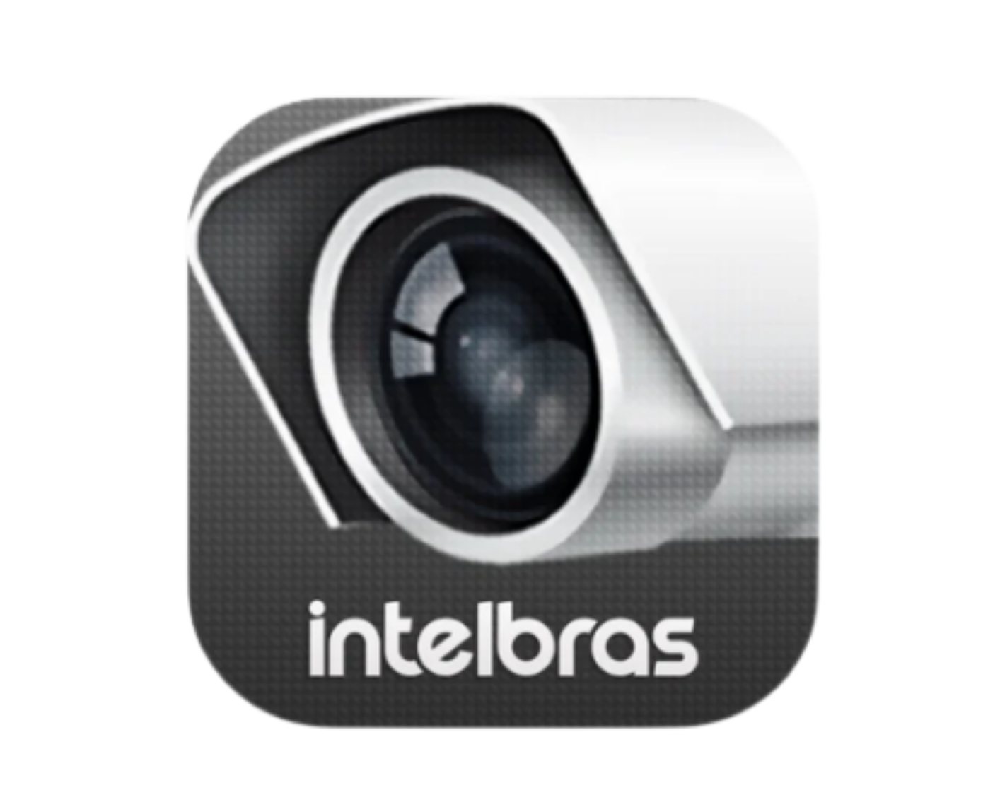
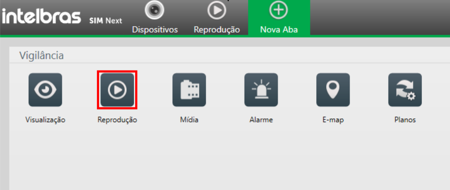
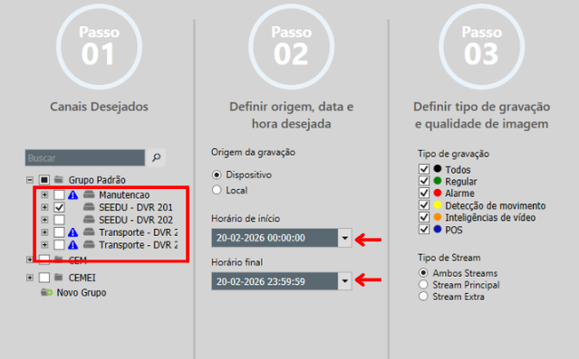
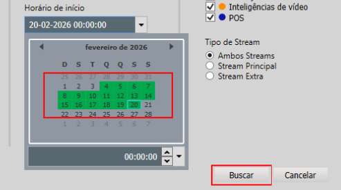
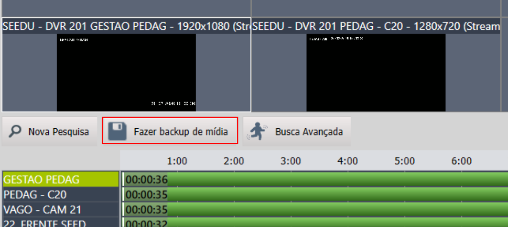
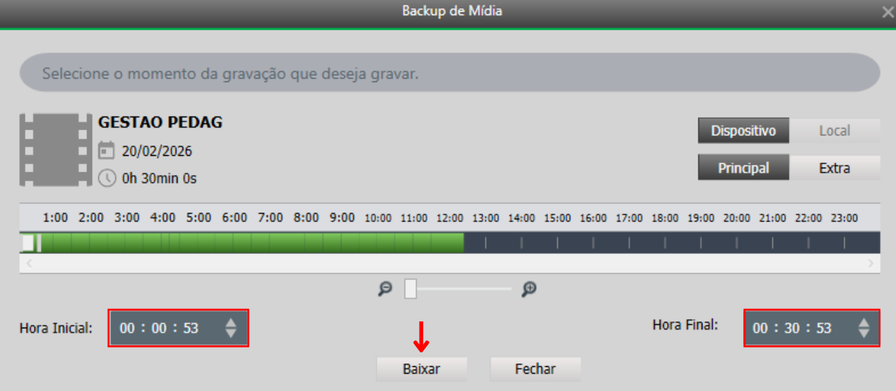
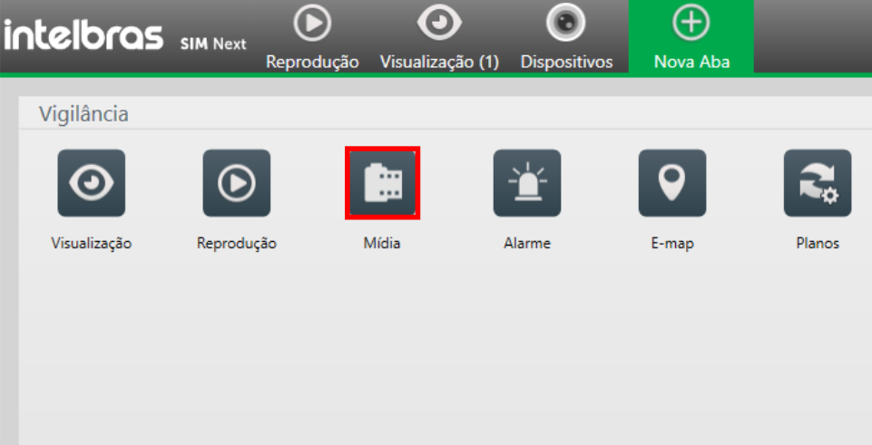
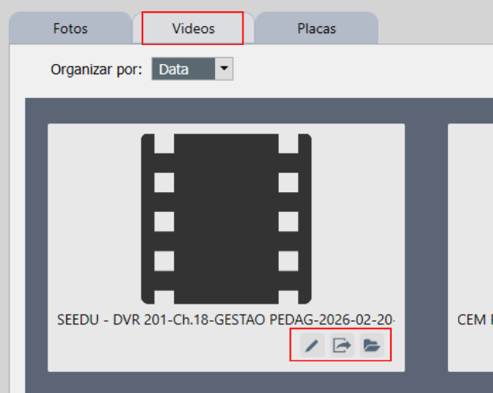

Câmeras: Buscar e Exportar Gravações
Aprenda a resgatar imagens de dias anteriores, pesquisar por horários específicos e exportar os vídeos do Intelbras SIM Next diretamente para o seu computador.
Abrir a aba de Reprodução
Na tela inicial do SIM Next, clique no ícone Reprodução.

Pesquisar a Gravação
Uma janela chamada "Buscar Gravação" vai aparecer. Siga passos:
1. Selecione as câmeras: Marque a caixa de seleção (▢) ao lado do nome do DVR para buscar imagens de todas as câmeras. Caso queira uma câmera específica, clique no ícone de "+" para expandir a lista e selecione apenas a câmera desejada.
2. Defina o período: Clique nos campos de "Horário de início" e "Horário final" para abrir o calendário e definir a data e a hora exata que você deseja assistir.

Os dias destacados em verde no calendário possuem gravações disponíveis. O limite de armazenamento varia conforme a capacidade do equipamento:
- DVR de 16 câmeras: armazena as imagens por aproximadamente 32 dias.
- DVR de 32 câmeras: armazena as imagens por aproximadamente 15 dias.

Linha do Tempo e Backup
Para salvar o vídeo, com a câmera selecionada clique no botão Fazer backup de mídia.

Hora Inicial e Hora Final
Na janelinha que abrir, ajuste a "Hora Inicial" e a "Hora Final" do corte exato que você deseja salvar. Em seguida, clique em Baixar.

Exportar o Vídeo para o PC
Volte na tela inicial do SIM Next (aba Nova Aba) e clique em Mídia.

Acessando a aba Vídeos, você poderá visualizar todas as gravações baixadas. Utilizando os ícones localizados abaixo de cada arquivo, é possível realizar as seguintes ações:
- Renomear: Altera o nome do arquivo para facilitar a identificação.
- Exportar: Salva a gravação no seu computador (Área de Trabalho, Pen Drive).
- Abrir local: Abre a pasta original do sistema.
